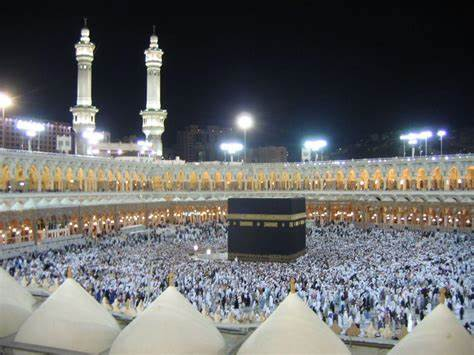
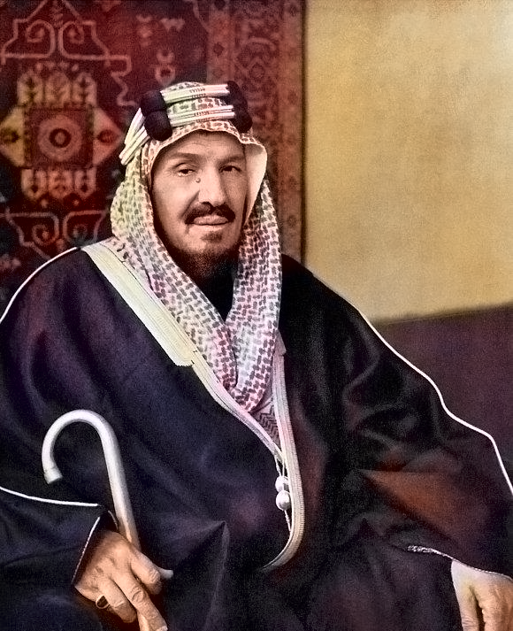

About My Hometown
I was born and raised in Jeddah, Saudi Arabia. Kingdom of Saudi Arabia (KSA) is one of the largest states in the Western Asia by land area. Jeddah is the second largest city in the kingdom after the capital city of Riyadh. Also, KSA is the birth place of Islam and home of the two holiest shrines: Makkah Al-Mukarramah & Madinah Al-Munawarah.
Below is the picture of the holy city of Makkah Al-Mukarramah:-
And below is the image of the holy city of Madinah Al-Munawarah:-

KSA was founded in 1932 by Abdulaziz ibn Abdul Rahman ibn Faisal ibn Turki ibn Abdullah ibn Muhammad Al Saud, known in the West as Ibn Saud.
